本文的核心逻辑在于‘存量博弈下的防御性策略’。作者认为，当市场成交量无法维持高位时，流动性枯竭导致指数与个股出现背离，即‘指数虚高、个股阴跌’。其内在因果链为：成交量萎缩->市场缺乏增量资金->存量资金仅能维持局部热点->大部分个股因缺乏承接力而阴跌。因此，作者主张通过‘降低总仓位’来换取‘心理主动权’，将现金视为一种资产，旨在通过空仓等待市场在关键区间（3950-3650）出现恐慌性杀跌时，利用低位筹码进行配置，而非在震荡市中盲目博弈。
自从成交量回不去2.5万亿注【本质逻辑】成交量是市场流动性的晴雨表，2.5万亿是市场情绪和增量资金的临界点。低于此水平意味着市场进入存量博弈，资金无法支撑普涨，只能在极少数热点中抱团。【新手提示】不要试图在缩量行情中寻找普涨机会，此时个股走势极易与大盘脱节。以后，大部分个股走势是跟不上指数的，基本上都是阴跌注【本质逻辑】指股价在没有明显利空的情况下，每天小幅下跌，由于缺乏买盘承接，卖压虽小但持续存在。【新手提示】阴跌比暴跌更可怕，因为它会不断磨损投资者的耐心，导致最终在低位绝望割肉。状态
现在行情非常难做，仓位控制肯定是第一位，不管你看好什么，想做什么，短线还是长线这些都要先给仓位控制让路
就是说先把总仓位降下来，最起码55%以下，越低越好
先确保自己手里是有钱的状态，未来就算全球股市有什么比较大的崩盘，错杀，你可以有能力收集廉价筹码，这个比什么都重要
千万不能只考虑到自己能挖掘到一些低位机会，自己有看好的方向，就觉得不需要预留现金仓位
比如说现在很多农林牧渔，文化传媒出版，液冷电子材料AI产业链细分领域，等有资金在运作，也确实有不少投资者去博弈，小仓位玩一玩，这个可以玩，但前提是你总仓位控制比较好，而不是满仓或者高仓位去玩，风险程度是不一样的
你总仓位不高，拿出来一部分资金博弈博弈，不行就止损，这样确实无伤大雅，遇见大跌，止损起来也不会太难受
如果这种行情，这么弱的情况下，还高仓位去参与，到时候止损果断可能都损失巨大
3950-3650区间是未来主要的运行区间
没有什么特殊利好，或者资金面回暖的情况下，3950以上一定一定不要乱加仓，虽然是经常回到3950以上，但个股跟不上的，盘面太弱了，3950以上反而是卖出机会，是给你把仓位控制下来机会
3950-3650区间的杀跌才是买点，才有加仓机会
如果在3950以上不优化仓位，到时候跌下来你没有主动权，没有灵活性去加仓，而且心态也会很差
下跌的时候没有加仓空间，每天很难受，影响健康和生活，有时候真的可能熬不住都卖了，节奏都乱掉
投资波动很大是正常的，怎么通过仓位的控制来保护好自己的心态和本金安全，是我们投资者一生的必修课
现在这种行情就是指数看起来好像还可以，有时候还进攻到了4000附近
但大家去看分时图，去看资金面，看很多热门股票的成交单子，和过去比，大单少了多少
而且过去成交量100的股票走势是怎么样的，现在是怎么样的
但凡认真复盘一下资金面，都应该可以感受到，现在的行情很难做
休息，减仓，多留现金，静观其变，降低，交易频率是最好的，这种行情赚不到钱不是说能力问题，而是市场现在就是不怎么给你赚钱机会
有时候一些投资者，总是会觉得自己如果在某一段行情里面赚不到钱，就怀疑自己
我个人是认为赚钱不赚钱，行情很重要，综合投资能力是用来保护比较安全，来控制心态的，真的要赚钱，不是我们普通投资者说了算的，我们就算满仓上去，股市也没有什么水花
股市要上涨，要各路资金合力
这个就不是我们可以控制的事情
有行情，你想不赚钱都难
没有行情就应该降低仓位休息
能力不仅仅体现在每天要求抓机会，更多的是体现在审时度势，体现在该休息的时候，你可以慢下来，可以拿得住钱，可以什么都不做
这才是成熟的投资者
现在的行情我认为不适合大仓位，全球股市随时可能有大跌，一定要多留现金，先控制风险，再考虑机会
不管你看到了什么机会，都先等一等，不需要急着出手提升总仓位
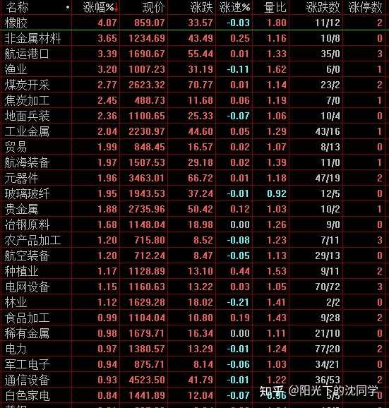
每天原创不易，读者朋友千万不要忘记点赞支持一下
正所谓先赞后看，腰缠万贯
大家可以先点一波赞，我们再继续慢慢聊
祝点赞的朋友福寿无量，天天开心
行情现在每天都差不多，指数震荡，大部分股票阴跌，小部分热点活跃，没有太多新的东西，反正不是很值得加仓，我个人比较难把握现在行情，我选择先休息
那么我们就趁着现在没什么新的东西可以聊，来聊聊，我们拿到一个股票以后，有什么需要看的，来做一个简单的科普，最起码让大家知道基础的分析怎么做，我们来走一遍流程
1，
我们随机在新股里面选一个企业举例子聊聊
比如说下面这个股票
拿到手，先看看这个企业有哪些热点，题材，看看是怎么样的一个股票
就像下面这样的情况，可以看出来企业有很多科技热点
这个就可以定调股性注【本质逻辑】指股票在资金运作下的波动特征，受题材爆发力、流通盘大小和主力风格影响。【新手提示】选股时要区分‘长线逻辑’（基本面）和‘短线逻辑’（题材爆发力），不要用基本面去衡量短线炒作的股票。，这样的企业股价爆发力大，平时容易做t，波动多
如果都是传统的题材和行业相关，那必然是没有什么短线机会，只能熬长线
这个属于一眼定股性，股票市场你的股性怎么样，股价爆发力怎么样，就是看能不能有故事，有热点，决定了你这个企业股价波动的框架
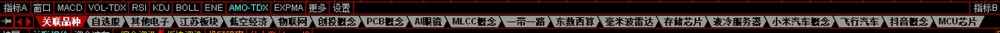
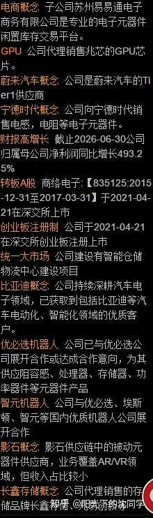
2，
然后简单看看企业基本面
看看负债起来，看看净利润率，毛利率，营收，现金流这些
这些也不需要咬文嚼字，就是看企业是不是属于那种经营轻松，赚钱轻松的企业，和同行比，如果负债更低，赚的更多，毛利率这些更高，营收增长更快，这种就更好
相当于基本面不错，股价未来爆发力更大
如果基本面一般般，做的苦活，赚钱不容易，那就算题材多，一样麻烦，基本面会限制炒作
一身的题材，还基本面好，那就值得加自选股，就可以慢慢看，以后有机会，就可以博弈一下，实战看看
如果基本面一塌糊涂，不仅仅是不如同行，而是可能退市那种，那纯粹就是博弈，这种我个人是不喜欢的，虽然牛市也可以上涨，有了利好一样上涨，这个是最开始的热点决定的，但风险偏大，我自己不喜欢博弈基本面太差的
为什么第一步是看题材，热点，就是因为短线基本面不是第一位
基本面是保底的，只能放第二位，有的炒作空间才是第一位，而且也影响市场上资金的一个态度
基本面一样的情况下，题材多的，科技类就是估值给的更多，你不承认也没办法，这个就是股性，你必须要看的
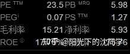
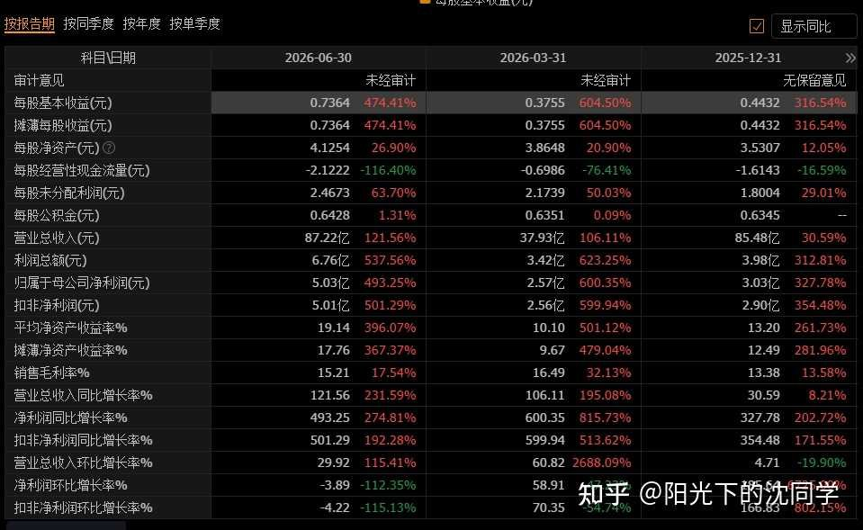
3，
第三步看资金面，筹码情况，量价配合情况，各种技术走势，趋势这些情况
企业如果有题材可以讲故事，基本面也好，那么就是寻找买点
寻找买点肯定要看资金面，筹码情况怎么样，是在洗盘阶段，还是在拉升阶段，还有没有上涨空间，这些都需要通过下面各种判断来复盘
如果趋势不错，有题材，有热点，基本面没有问题，那么最起码短线博弈是可以试一试的，估值高就博弈短线，估值低可以长期慢慢配置
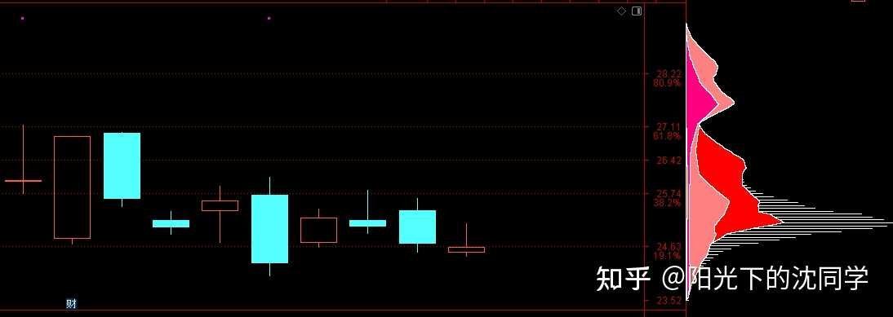
图中筹码分布显示上方套牢盘压力巨大，当前股价处于筹码密集区下方。多空博弈中，空方力量占据主导，缺乏资金向上突破筹码峰，暗示短期内上涨阻力重重。
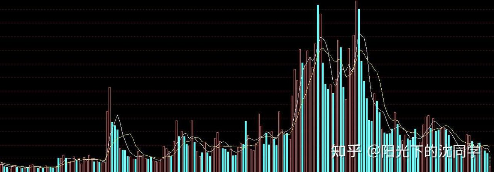
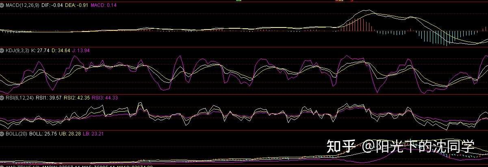
技术指标（MACD、KDJ、RSI）均处于中低位震荡，未见明显的金叉买入信号。这反映了市场处于‘无趋势’状态，资金观望情绪浓厚，缺乏合力方向。
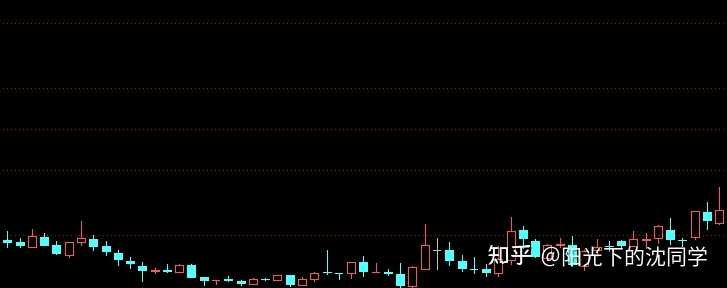
4，
单个股票本身，如果不考虑调研情况，上面这些就看的七七八八了
再深度去聊，比如说要投比较多的钱，肯定要涉及到调研，要去企业看看，或者要对行业有更多了解
因为你投资十几万和投资几百万，几千万肯定不一样
尤其是短线博弈买一点玩一玩，不可能也搞的那么复杂，不行就止损了
你自己投入多少钱，就需要花多少心血去做复盘和调研
不可能说你投了非常多钱，你居然可以企业都不知道是做什么的，都没有去考察过企业，那是你心大，这种长期必然踩雷
投的钱比较多的情况下，尤其是占比你持仓比较大的情况下，是不能没有调研的，对行业也要再进一步研究的
简单的过一遍上面的流程，只做短线小仓位博弈，那比较足够
而且其实你有了经验，看一眼上面的流畅，去看看各种股票，一眼就知道这个股票是不是适合你，自己会不会想博弈，不是很感兴趣的股票，或者确实看不太懂的股票，直接不管就好了，没办法什么股票都想做一下
在自己的能力圈里面做投资，比什么都重要
不管你是投资指数，个股，还是其他各种东西，直接不懂的最好不要投，这个是原则底线
便宜不便宜，有没有机会都是建立在你懂这个东西的基础上
真的要深度去聊，各种板块都有资金在做，都有机会，都是涨涨跌跌
只不过我们自己没有这种能力全知全能，我们有自己的局限性，自己人脉，认知的一个维度，肯定有我们看不懂的东西
这个没关系，不做就好了
筛选自选股就是把自己看好的，适合自己的，看得懂的留下来，其他的表现怎么样，我们不需要太在意
最适合新手投资者，上班族，股龄10年内投资者的投资策略分享
美股在高位，暂时没有定投机会
黄金还可以再观望一下，后面再调整调整可以重新定投，已经价位慢慢下来了，比之前拉升的时候现在买点多不少
债券依旧是目前非常好的选择，闲钱可以配置
红利分化比较大，个股很多低迷走势，低位红利优质资产有空间
这些优质品种长期复利没有问题，关键是目前整体全球股市不太好做，要考虑到加仓必然要先看总仓位
比如说你先在不大跌的情况下买一点红利或者加一点黄金什么的，如果已经仓位比较高了，这样就划不来
现在很多股票在指数没有崩盘的情况下就已经这样低迷，一旦指数崩盘了，他们更麻烦，真正熊市的时候是真的缺钱的
仓位控制再好，也肯定是容易满仓以后继续杀跌的，这个我有很多悲伤的经验
所以千万不要觉得自己保守，自己现金太多，永远要考虑到，现金是不够的，真正熊市一定的钱不够用的，现在多储备一点，后面用的上
所以很多长期优质资产也都可以慢一点去定投，慢一点加仓，先在各种优质的国债ETF里面稳住可能是目前最好的选择
其他其实A股，港股，美股，都不一定是很值得现在去大幅加仓的
美股在高位，A股指数也一样不便宜，港股是扑街了，整体指数水分越来越少，错杀比较严重，但还没有到12月，指数成分股的调整还没有结束，后面搞不好还能有一些错杀，所以加仓也不能太快，只能博弈可能纳入指数的科技，或者是核心龙头大跌以后买一点，并不能冒然现在大幅加仓
整体来看就是各种资产现在都不是很适合过于激进买入，现金是目前最好的资产，债券其实就是类现金资产，是可以比较优先配置的
除非未来美股，黄金，红利大跌一波，那当然可以重新买起来，可以多重视一点
现在还是拿住这些底仓不要乱加更好，其他多留现金，没必要持仓的都可以先不要，行情不太好做，拿得住钱依旧是目前最好策略

大家有任何投资疑问，有什么想交流的都可以付费咨询，想单纯支持一下也可以
【在知乎上我的主页咨询即可，没有任何群，不搞私下小圈子】
家庭资产长期稳健配置方案分享，仓位优化，估值分析，行业分析，心态调整，各种投资学习技巧都可以咨询
大家的支持和尊重是我创作的最大动力
感恩大家每天的付费咨询和打赏，感谢大家对知识的尊重，感谢大家对我的支持
欢迎提问
适合职业投资者，10年以上经验老股民，基本功极其扎实投资者的实战分享
继续聊实战
行情在不给机会的时候，筛选筛选自选股，多看看自己的持仓，优化优化，挺好的
现在的行情真的不太好大幅加仓，我都已经短线持仓有一段时间维持清仓状态，总仓位一直没有超过50%，预留了足够加仓空间，个股持仓很多感觉一般般的，暴雷的都做了一波清理，现金分散到各种国债ETF里面
就是因为确实不太好做
美股长期看好，但不想高位一直买，美股也会跌，我投资美股这么多年，美股是突然急跌，然后长期修复，不是不会跌，现在就是美股相对高位，这种时候大幅加仓，肯定是不理性的
A股是有一批看好的企业，现在不算贵，低位的优质科技，包括红利，白马蓝筹，这些确实有选择空间
但我自己很多已经有仓位，继续选择去买，仓位就控制不好了，只能先等一等，先观察，最好指数释放释放压力，远离一点3950，我会考虑加一点A股仓位
这一轮自选股调整也发现了不少好公司，也想开仓试一试股性，也想实战看看，所以挺需要一波大跌，来做这些建仓和配置工作，没有大跌实在是没有什么买点
港股本来都修复挺好，但突然恒生科技要大幅修复成分股，导致12月之前，大权重起不来，会一直承压，然后市场流动性一般般，全球加息周期在开启中，也不太好快速加仓
但长期来看，港股确实目前扑街比较多，从核心企业，指数来看，未来上涨空间也比较大，就是这个指数调整的影响，会比较考验加仓点，就算不一直调整到12月，提前一点，11月前后也是有可能的，需要慢一点去加仓
所以这段时间港股核心权重和可能纳入恒生科技的新的科技有在做，但没有大仓位去买，等后面差不多这个影响过去了，成分股调整差不多了，错杀的核心权重会加仓多一点
依旧长期看好新消费，金融，红利，高端制造，创新药，游戏，AI这些港股龙头股机会，为了控制好仓位，防止更多错杀，需要加仓更慢一点
等熬过去这一波指数成分股调整，很多核心权重会估值修复，然后选择炒作的科技，这些会大跌
所以如果短期不参与这些科技的博弈，后面也最好不要参与，反而是一直阴跌错杀的权重，到时候会崛起，这些是长线投资者，未来加仓的方向
拉长时间来看，港股，A股，美股的核心企业都一样，谁便宜谁有机会，就是走势节奏不一样，他们调整的时间不一样，但肯定都是大跌去寻找买入机会，涨起来了都不太好做
流动性更差的港股，走势会更极端一点，有资金涌进来的时候上涨非常快，资金撤退的时候就非常弱，不会给到太多波段，做t机会
所以很多投资者港股的投资体验更差，尤其是新手投资者，我认为投资港股不适应的更多，美股是最适合的
因为美股长期回撤少，上涨时间多，就算短期爆发力没有港股，A股大，但大部分时间是快乐的
A股来来回回反复捶你，然后爆发一波
港股是跌起来很呆，死气沉沉，一直温水煮青蛙的打你，等你熬不住了，他突然爆发起来就追不上
美股是平时都很稳健，一直给你收益，偶尔突然打你一顿，但后面又不断修复，让你遗忘痛苦比较快
所以从持仓体验来看，美股完胜，赚钱的过程很舒服
越是新手投资者，越应该多重视美股，当然加上债券，黄金，红利这些比较长期温和的资产，是更好做的，持仓体验更好的
高手可以做A股，心态非常非常好的高手可以做港股，这些都属于波动大，且持仓体验不太好的，如果心态波动大，或者经验不足，是不容易在A股，港股这两兄弟手里赚钱的，他们很多时候是让人绝望割肉或者震荡的你拿不住的
这个是三个市场不一样的特点，我这些年都深度体验过他们的鞭挞，也都习惯了
走势不太好的时候，骂几句，该加仓还是加仓，有机会还是要把握的
三个市场都有好资产，在有便宜机会的时候，长期当然都可以赚钱，管他过程怎么样，已经被这些市场鞭挞的皮糙肉厚了，我也就习惯了
最多就是加仓的时候泪水多一点罢了，也不是什么大事
只要我总仓位控制好，短线，长线账户按照自己的盈利模式慢慢做，坚守这些原则底线，整体来看，都值得配置，我个人都还挺喜欢这三个市场
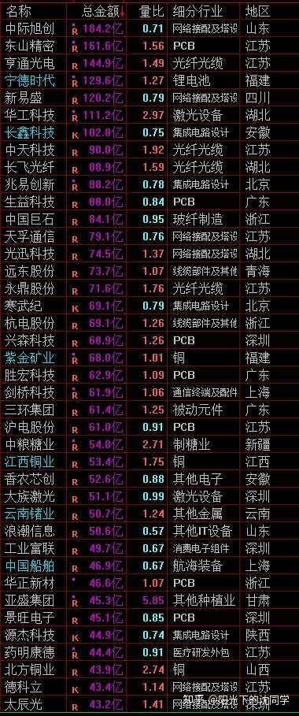
量比数据普遍偏低，说明热门板块缺乏持续的资金涌入。量比小于1的股票占据多数，证明市场活跃度极低，大部分个股处于‘无人问津’的阴跌状态。
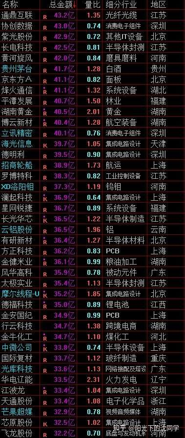
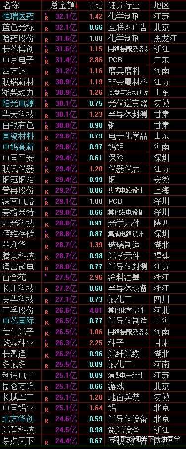
风险提示：股市有风险，入市须谨慎
今天是坚持写复盘笔记的第1519天【每日打卡】
下面是我自己多年来的一些重要的心得感悟，分享给大家，会不定期增加内容
1，
长期投资成功的关键是稳定的情绪和沉稳的性格，这些比过人的天赋更重要
2，
最终我们穷其一生获得的一切经验、知识和所有财富都需要转化为自身的品德修养，不然获得越多失去越多
自身的修养是留住各种财富最好的容器，富裕一时不难，富裕一生不易
珍惜获得的一切，保持初心、慈善、知足，让自己的德行和财富共同成长，才能方得始终
3，
古之成大事者，不惟有超世之才，亦必有坚忍不拔之志
想成为优秀的投资者一定要持之以恒，不断学习，反思，总结，在投资中获得的各种经验最终都会成为你财务自由的砖瓦
4，
再高的智商也一样会被情绪一瞬间冲垮
大部分的亏损都来源于投资者的冲动和情绪化交易，学会控制自己的情绪和心态才能长期稳定的复利
5，
富在术数，不在劳身
一定要多思考，任何时候想清楚了再交易，漫无目的的交易，只会多做多错
6，
利在势居，不在力耕
投资赚钱主要靠把握时机，没有机会就休息，多留现金
做可以让自己心安的投资，便是对于你来说最好的盈利模式
7，
谨记：贪念起，万念俱灰！
控制住了风险，利润会随之而来
富贵险中求，也在险中丢
求时十之一，丢时十之九
仓位情况【不推荐模仿】
短线博弈仓位：0%
长线+短线总仓位尽可能低于55%，这样更符合当前行情的风险程度
长线资产配置目前个人分散持有：各种债券ETF+各种核心红利ETF+美股ETF+黄金+优质REITS+长期看好的优质企业+核心ETF
美，港，A股长线+短线所有股票持仓投资方向配置比例参考：
金融：10%
消费：31%
生物医药：13%
AI产业链：7%
能源，动力：9%
高端制造：25%
周期：5%
【每3-6个月更新一次】
最新更新时间2026年9月
祝大家在如梦如幻的行情里清醒而自由
全文逻辑总结：在当前存量博弈的弱势行情下，‘现金为王’是最高准则。作者强调投资的本质是‘审时度势’，而非‘全知全能’。新手避坑指南：1. 严控总仓位，不要在震荡区间盲目满仓；2. 区分题材股与价值股，不要用基本面去博弈短线题材；3. 承认能力圈边界，看不懂的行情宁可空仓休息；4. 警惕阴跌磨损，不要在下跌趋势中频繁补仓，等待市场出现恐慌性杀跌后的‘黄金坑’才是真正的买点。

{kind=link}
{kind=link}
{kind=link}
{kind=link}
每日笔记
1、 老沈都说这行情非常难做，我等小韭菜就先管住手；苟，宜学习。
2、 美股在高位，暂时没有定投机会
3、 黄金还可以再观望一下，后面再调整调整可以重新定投
4、 债券依旧是目前非常好的选择，闲钱可以配置
5、 红利分化比较大，个股很多低迷走势，低位红利优质资产有空间
继续定投，继续苟。
开心的是中了一个小新股，回一点点点点血
老沈今天又分享了很多分析个股和复盘的心得，非常干货，必须收藏一波
能力圈真的很重要，就像我每周都认真看老沈写的调研文章，一个月前就在聊农业机会，但我确实是自己不懂，所以错过了
生物医药方面听说很多投资者亏钱，但我一直以来因为可以获得很多内部情况，所以投资不错，这方面选股不会错，这个就是能力圈
自己不懂的东西，别人怎么说也可能没办法把握，代码给你也一样赚不到钱，本质上投资还是看自己有没有吃透这个方向，自己的能力圈有多少
我之前清仓港股，就是因为恒生科技要大幅调整成分股，我就没办法判断后面会怎么样，所以我赶快卖掉算了，港股确实对我这种新手来说，不太好弄，我寻思着还是11-12月再买，港股也确实跌了比其他市场多，理性来看，肯定是机会，就是我自己能力不知道能不能做好，还需要慢慢来尝试
现在最重要的事情就是拿住钱，维持我65%的持仓，等后面大跌，老沈加仓的时候，我再加，多学习，多了解不同的行业，拓展自己的能力圈，比什么都重要
到处去出差的时候，我也会学着老沈一样去参加股东大会，但不怎么听得懂，不过也认识很多职业投资者，认识很多朋友，这个是好事，相当于拓展了自己的人脉，调研确实很重要，难怪老沈一直提调研，每年到处参加调研，以后这方面我也会去做，多参加股东大会
我的梦想就是20万以上红利，然后退休，简单工作，职业投资，到处调研了解企业
祝我成功吧
今天是教师节，我想祝沈同学节日快乐，因为沈同学是我投资方面的老师，向他学到很多东西。
今天这篇价值连城，讲的就是全面选股。选股一直是我最弱的环节。要收藏起来逐帧学习。上周末其实我就有根据自己能力范围尽可能选择了一下短线博弈的股票，这周短线表现就比之前好一些。考虑因素越多越全面，做对的概率就越大，再结合投资组合、仓位控制、良好的心态，风险就可以被有效压低。短期没有调研打算，工作性质不允许，自由时间较少，也没什么出差或假期。只能通过其他方式弥补，比如看财报或者收集其他信息。也许以后有一天成为全职投资者，时间自由了，也会去调研。其实对股票的了解是很重要的，你很清楚它值多少钱，未来前景什么样，财报、技术面、消息面都是次要的，你很了解，也不存在什么不知道买卖点和心态波动大的问题。
我也是美股、港股、A股都玩。美股主要是ETF，确实持有体验极好，企业优质，也重视投资者回报，流动性也好，大多数时候上涨。少部分时候震荡或下跌。有比较大的下跌是很好的加仓机会。你很清楚未来会涨回来。所以不要去做波段，长期持有有大跌买入就好。黄金、红利也是类似玩法。
A股流动性充沛，充斥着各种投机，跌会跌过头，涨也会涨过头。基本就是按老沈今天文章这一套分析，哪些有热点题材有搞头，哪些基本面还可以，然后资金面情况怎么样，技术走势怎么样，估值低的慢慢配置长期持有，估值高的做波段。赶上主升浪了就拿着，没有的就多做波段。所以对我这种半吊子来说，技术面还是挺重要，长周期的技术走势配合还可以的企业质量，风险就会小很多。
港股体验很差，我这种忍耐力比较强的人有时候也想吐槽。新手建议不要玩，买点或者仓位没控制好，持续阴跌，就是钝刀子割肉，一点希望不给你，也没什么短线博弈机会。再好的基本面，也可以一直阴跌。港股核心在于流动性，流动性不好的时候就是趴在地上一条狗。所以玩港股要么仓位控制非常好，可以很精细很缓慢的慢慢在低位加仓。要么非常关注中美两国各种政策，有机会了直接一波流。流动性看美国，基本面看中国，其他亚太市场又会和他竞争资金，所以港股走势大多数时候很拧巴。
干货满满的一期，宝藏，学习了[赞]
老沈对三个市场的对比描述透彻形象
沈同学也是我学习投资的老师，祝沈同学节日快乐，感谢悉心教导[感谢]